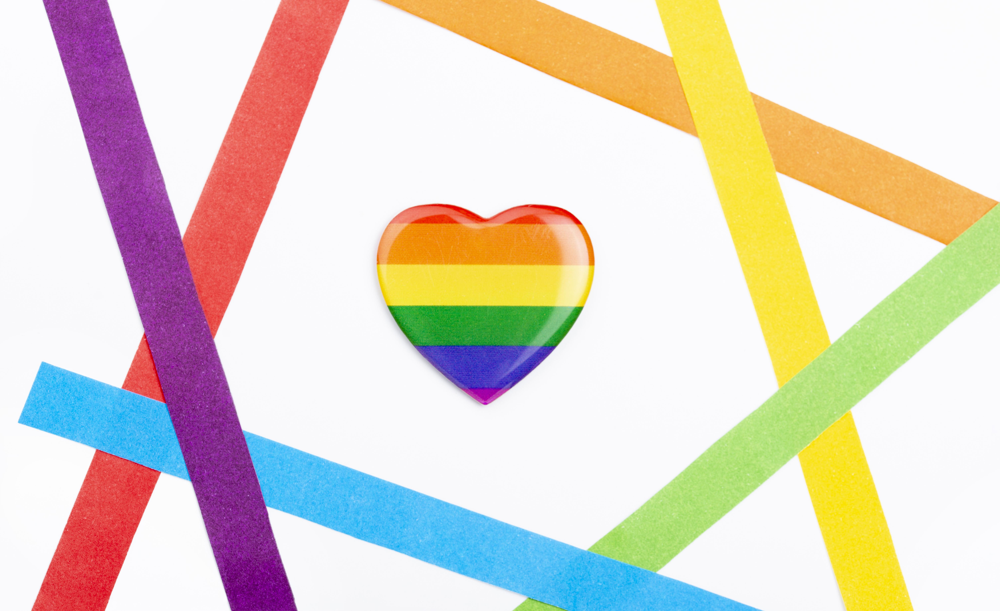
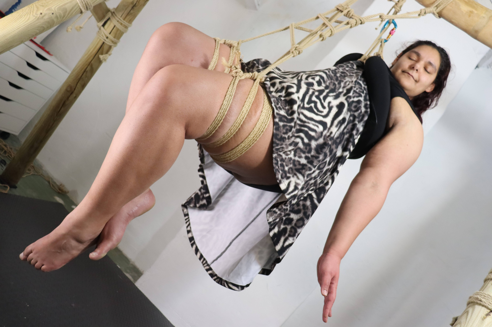
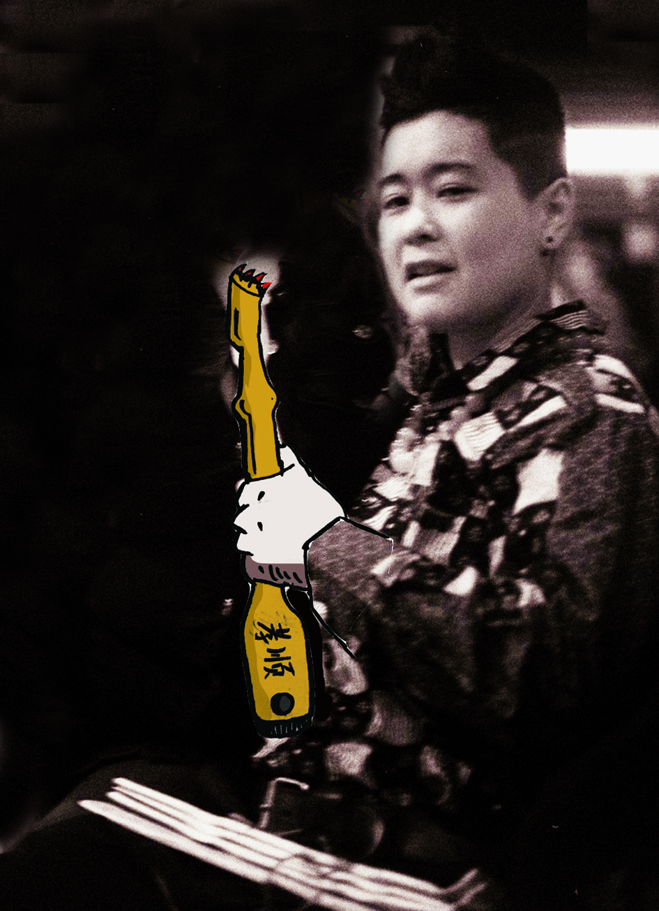
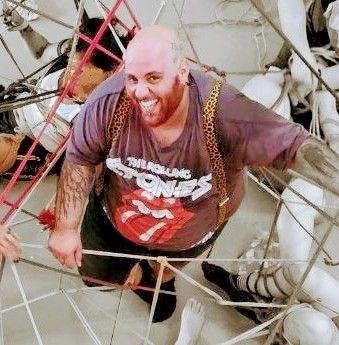
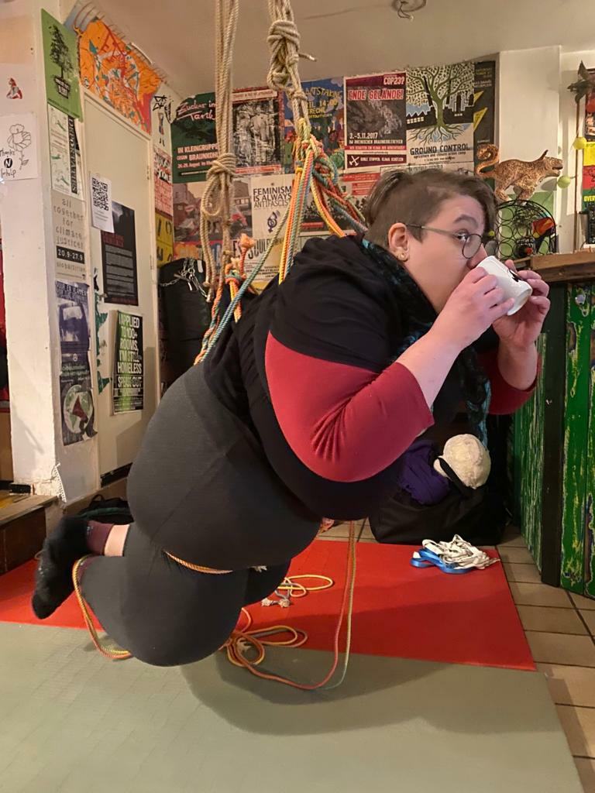

Introducing
the Big, the Fat and the Pervs
We are BigFatPervs, a WLINTA collaborative group trying to create a safer, do it yourself, self-organized space for all WLINTA, BDSM, Qink (Queer and Kink) lovers.
If you would like to collaborate or contribute, please contact us by e-mail bigfatpervs@riseup.net

Karla
Hi, I’m Karla or PurpleRyu on FL. My pronouns are They/Them and I am a Queer Switch. I speak both English and Dutch. I tend to be a background organizer, meaning that I do not like being seen and tend to stay in the background work to help keep everybody, including myself, on track. Keeping an eye on deadlines, writing texts and contributing ideas. During rope related events I am the one who can answer questions about bondage. I am also responsible for rope safety and awareness and work to help the other organizers and participants in sharing in that responsibility. I have also been trained in giving First Aid and am able to assist people with a mental disorder or with physical limitations. My personal belief is that equality is a myth. No one is equal and everyone should be respected and celebrated for their individuality.

Jack
Hi all, I go by Jack P (he/him/他) and by Jack Growl on FL. I organize and live in communities that have taught me skills on how to relate, listen, speak up and reflect. Being part of a crew that is about kinky skill sharing whilst resisting and healing from systemic oppression warms my heart and parts. I facilitate the public space at the Nieuwland during our events. People are welcome to approach me for questions and feedback regarding the space.

Nihú
Nihú (they/them), QueerDos on FL is a big fat perv! They have been a part of many different communities and participated in organizing events/groups/workshops/festivals/actions. They believe in self reflection and empathizing as a means of connecting and learning from each other. they value emotions and vulnerability. Body positivity, kink, recognizing and trying to bring down systems of oppression are part of their existence. They get very exited with new ideas and ways of connecting. You can go to them if you wanna do an event/workshop or want to try something new and they will try to find the resources to make it happen.

Sas
Hey hey, I’m Sas (they/them), Neonlichtaugen on FetLife. After some rather empty years of my life, I’ve finally landed in Amsterdam in 2023. As part of the BigFatPervs, I’m learning how to build, be part of and maintain a community in a way that offers support, connection and opportunities in a (for me) healthy and accessible way. Exploring the ways we can grow as a community and individuals and learning about so many different perspectives and experiences is something I am really grateful about. At our events (and online), I am the PeoplePerv, taking over messaging with people and welcoming everyone who attends our events. My ears are always open for questions, remarks and critique, so let me know what’s up :